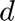
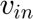
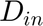
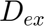
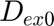
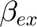
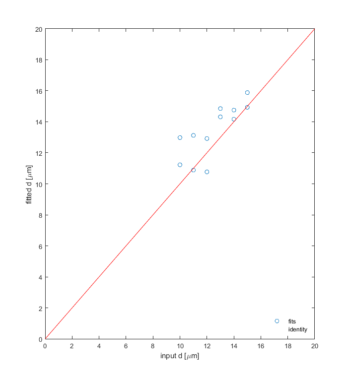

Example of performing IMPULSED fitting
This example shows how to (1) how to synthesize dMRI signals based on the IMPULSED method; and (2) how to fit the IMPULSED model to dMRI data to extract microstructural parameters such as mean cell size , apparent intracellular volume fraction , intra- and extra-cellular diffusion coefficients  and .
Reference
The main reference that should be cited when using the code in this script is
- Jiang X, et al. Quantification of cell size using temporal diffusion spectroscopy. Magn Reson Med. 2016;75(3):1076-85. PubMed PMID: 25845851.
- Xu J, et al. Magnetic resonance imaging of mean cell size in human breast tumors. Magn Reson Med. 2020;83(6):2002-14. PubMed PMID: 31765494.
Comments or questions?
Please send your comments or questions to Junzhong (JZ) Xu (junzhong.xu@vanderbilt.edu)
Contents
Preliminary
clear variables ; clear obj ;
Generate DiffusionPulseSequence objects
Create a trapezoidal cosine OGSE pulse sequence object for all OGSE acquisitions
Nacq = 9 ; % total number of acquisition points pulse_tcos = mati.DiffusionPulseSequence(Nacq,... 'TE', 110,... % echo time [ms] 'delta', 40,... % gradient duration [ms] 'Delta', 45,... % separation of two gradients [ms] 'b', [0.1,0.2,0.3, 0.4, 0.2,0.4,0.6,0.8,1.0], ... % b value [ms/um^2] 'n', [2,2,2, 2, 1,1,1,1,1],... % number of oscillating cycles 'shape', "tcos",... % gradient waveform shape 'gdir', [0 0 1],... % gradient directions. It should be a Nx3 matrix 'trise', 0.9) ; % gradient rise time [ms] % Create a trapezoidal PGSE pulse sequence object for all PGSE acquisitions Nacq = 9 ; pulse_tpgse = mati.DiffusionPulseSequence(Nacq, ... 'TE', 110,... 'delta', 12, ... 'Delta', 74, ... 'b', [0.2:0.2:1.8], ... 'shape', "tpgse",... 'gdir', [0 0 1],... 'trise', 0.9) ; % Combine OGSE and PGSE pulse sequence objects pulse = mati.PulseSequence.cat(pulse_tcos, pulse_tpgse) ; % An example of choosing a subset of PulseSequence object to meet e.g., hardware limitations pulse = pulse(pulse.G<80e-5) ; % 80mT/m = 80 x 10^(-5) gauss/um % Display the PulseSequence object pulse.disp(pulse)
<a href="">Note: PulseSequence properties should be column vectors. They are shown as row vectors here for visualization purpose only
</a>
ans =
struct with fields:
delta: [40 40 40 40 40 40 40 12 12 12 12 12 12 12 12 12]
Delta: [45 45 45 45 45 45 45 74 74 74 74 74 74 74 74 74]
shape: [1×16 string]
b: [1×16 double]
G: [1×16 double]
n: [2 2 1 1 1 1 1 0 0 0 0 0 0 0 0 0]
trise: [1×16 double]
gdir: [3×16 double]
f: [1×16 double]
w: [1×16 double]
T: [20 20 40 40 40 40 40 0 0 0 0 0 0 0 0 0]
tp: [1×16 double]
tdiff: [5 5 10 10 10 10 10 70 70 70 70 70 70 70 70 70]
gamma: 26.7500
Nacq: 16
TR: []
TE: [110 110 110 110 110 110 110 110 110 110 110 110 110 110 110 110]
B0: []
df: []
Generate IMPULSED model object
Choose which specific model to use. Note that IMPULSED can fit up to five parameters, i..e, , , , , and . Individual parameters could be fixed during fitting to enhance the fitting precision of other parameters.
nmodel = 3 ; switch nmodel case 1, structure.modelName = '1compt' ; structure.geometry = 'sphere' ; case 2, structure.modelName = 'impulsed_vin_d_Dex' ; structure.Din = 2 ; structure.betaex = 0 ; structure.geometry = 'sphere'; case 3, structure.modelName = 'impulsed_vin_d_Dex_Din' ; %structure.betaex = 0 ; structure.geometry = 'sphere'; case 4, structure.modelName = 'impulsed_vin_d_Dex_Din_betaex' ; %structure.geometry = 'sphere'; end % Create an IMPULSED model object impulsed = mati.IMPULSED(structure, pulse) ;
Example of synthesize dMRI signals based on the IMPULSED model
This is for computer simulations studies to synthesize dMRI signals based on the IMPULSED model. The ground-truth microstructural parameter are determined below. NOTE:
- parms_sim is a cell array that contains all microstructual parameters for dMRI signal synthesis
- variables (*_sim) indicate ground-truth microstructural parameters used in the simulations.
switch nmodel case 1 % [d, Din] d = [10:15] ; Din = [1.56 3] ; parms_sim = {d, Din}; [d,Din]=meshgrid(d,Din) ; d_sim = d(:)' ; Din_sim = Din(:)' ; case 2 % [vin, d, Dex] vin = [0.6] ; d = [10:15] ; Dex = [1.56 3] ; parms_sim = {vin, d, Dex}; [vin, d,Dex] = meshgrid(vin, d,Dex) ; d_sim = d(:)' ; vin_sim = vin(:)' ; Dex_sim = Dex(:)' ; case 3 % [vin, d, Dex, Din] vin = [0.6] ; d = [10:15] ; Dex = [1.56 3] ; Din = [1.56] ; parms_sim = {vin, d, Dex, Din}; [vin, d,Dex,Din] = ndgrid(vin, d,Dex,Din) ; d_sim = d(:)' ; vin_sim = vin(:)' ; Dex_sim = Dex(:)' ; Din_sim = Din(:)' ; case 4 % [vin, d, Dex, Din, betaex] vin = [0.6] ; d = [8:2:16] ; Dex = [2] ; Din = [1.56] ; betaex = [5] ; parms_sim = {vin, d, Dex, Din, betaex}; [vin, d,Dex,Din,betaex] = ndgrid(vin, d,Dex,Din,betaex) ; d_sim = d(:)' ; vin_sim = vin(:)' ; Dex_sim = Dex(:)' ; Din_sim = Din(:)' ; betaex_sim = betaex(:)' ; end % Synthesize IMPULSED signals based on the microstructural parameters determined above signal_sim = impulsed.FcnSignal(parms_sim, impulsed) ; % Add Rician noise to synthesized signals sigma_noise = 0.025 ; % standard deviation of Gaussian noise in the real and the imaginary images assuming to be equal signal_sim = mati.Physics.AddRicianNoise(signal_sim, sigma_noise) ; % Create an ImageData object [Npulse, Nparms] = size(signal_sim) ; data = mati.ImageData(reshape(signal_sim',[Nparms, 1, 1, Npulse]), sigma_noise) ;
Fit IMPULSED model to dMRI signals
Create a Fit object
fitopts.solverName = 'lsqnonlin'; % {'lsqcurvefit' , 'lsqnonlin' , 'fmincon'} fitopts.options = optimoptions(fitopts.solverName,'Display','off') ; fitopts.noiseModel = 'standard' ; %{'none','standard';'logLikelihood'} fitopts.flag.parfor = 'y' ; % If use parallel computing with parfor fitopts.flag.deivim = 'n' ; % if remove IVIM influence fitopts.flag.multistart = 'y' ; % If try fittings multiple times with different initial conditions fitopts.NumStarts = 5 ; % if try multistart=='y', try how many times of different initial conditions? % Create a data fitting object fitpars = mati.FitPars(impulsed, fitopts) ; warning off ; % Fit model to data fitout = fitpars.Fit(data) ;
Check fitted results
Show the comparison of IMPULSED fitted and ground-truth mean cell size
figure(1) ; clf ; hold on ; plot(d_sim, fitout.d, 'o') ; plot([0 20],[0 20],'r') ; box on ; xlabel('input d [\mum]') ; ylabel('fitted d [\mum]') ; xlim([0 20]) ; ylim([0 20]) ; legend('fits', 'identity', 'Location','Southeast') ;